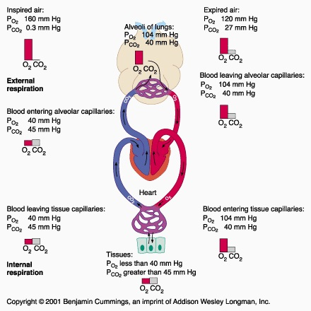
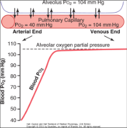
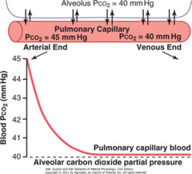

- Partial Pressures of Gases
- Generation of pressure gradients for net gas exchange.
- What is the P gradient for O2 in the lungs (PvO2 vs. PaO2)?
- For CO2?
- Assuming correctly that every O2 molecule consumed -> one CO2 molecule (roughly)…why the big difference between O2 and CO2?
